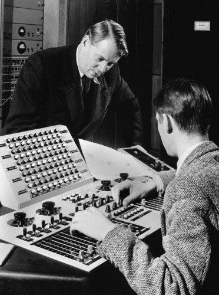
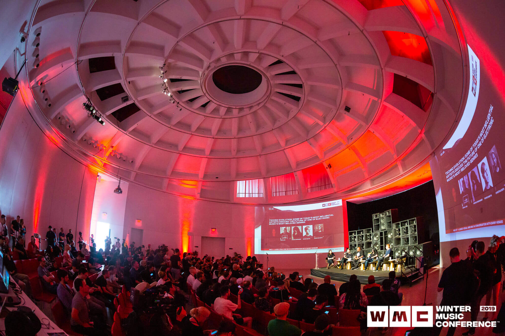
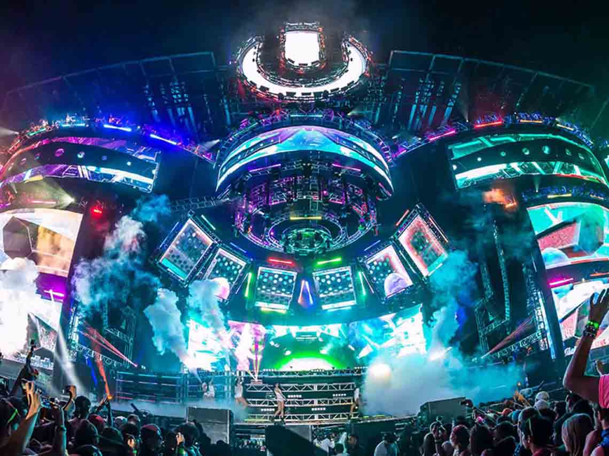

¿Porqué la música electrónica es tan, pero tan, ADICTIVA?
¿Algunas vez has escuchado como suenan las cuerdas de una guitarra electrica o el sonido de las percuciones que generan algunos instrumentos, pero has escuchado un sintentizador electrico? ¿O que tal si desde pequeño
querías tocar ese dj por curiosidad? pero alguna vez fuiste un festival tan grande como Ultra Music o Tomorrowland, pero más del 90% escucha música electrónica cada día, mes y año, pero según están en el top 10, de música a nivel global seguido del reggaetón y el rock,
pero muy seguido en México escuchan Narcocorridas y Rancheras por los camiones o los puestos, pero nadie sabe donde escuchan este género de la electrónica.
En general, se puede distinguir entre el sonido producido mediante la utilización de medios electromecánicos, de aquel producido mediante tecnología electrónica, que también pueden ser mezclados.
Desarrollo
¿Dónde fue el primer estudio de música electrónica en el mundo?
Se ha dado casos de que el primer estudio de este género musical se origina en Alemania en un estudio de Radio a la segunda mitad del siglo XX. Nada suele ocurrir por casualidad y en la historia de la música mucho menos.
La experiencia pionera ha logrado la aureola de mito por los resultados que obtuvo y su decisiva contribución a la historia de la música en la segunda mitad del siglo pasado.
El estudio se llamaba Studio Fur Elektronische Music des Wetchdeutschen o mejor dicho la (WDR), la instalación de la Radio de Alemania Occidental se convirtió en la mejor aliada para los músicos y productores de todo el mundo ansiosos de experimentar con nuevos sonidos. Fue allí donde surgieron las notas sintetizadas electrónicamente que se mezclaron para crear un género musical completamente nuevo y admirado en todo el planeta.

Un dato interesante
¿Qué subgéneros de electrónica te pueden interesar?
Algunos géneros que podrián interesar son los siguientes: House, Aparece por primera vez en la ciudad de Chicago durante la década de los 80.
EDM: El EDM es el subgénero con mayor número de adeptos dentro de este estilo musical. La simplicidad de sus estructuras junto a la velocidad de su ritmo han sido la clave fundamental de su éxito.
Dance: La composición de sus sonidos incita a la diversión y, por supuesto, al baile. Techno; Mucho concido por Daft Punk pero surge en Detroid en los años 80.
Drum and Base: Se desarrolla durante la década de los noventa. Se puede reconocer por el uso de sonidos con ritmos más acelerados y la incorporación del bajo.
Dubstep: Se le conoce así por tener un ritmo acelerado con un tono exagerado y sonidos fuertes.
Hardcore: Se le conoce también por ser de la dureza y tiempo de sus sonidos.
Trance: Aparece como una combinación entre el house y el techno. Este estilo es uno de los más referentes dentro de la música electrónica.
Antes de pasar a lo importante
¿Cual fue el primer festival de música electrónica en el mundo?
Según los que entienden sobre la música electrónica , el primer festival de este género fue el Winter Music Conference el WMC en Florida durante 1985 y fue fundada, Record Pool, Luis Possenti y Kelly Bill, actualmente es un evento creado para inspirar a los profesionales de la industria y presentar las más recientes innovaciones del sector.
Muchos artistas utilizan esta plataforma y encuentro como trampolín para su carrera, mientras que empresarios la han utilizado como un medio para presentar sus negocios y desarrollos tecnológicos. Desde 2008, la conferencia ha recibido una creciente competencia de la Cumbre Internacional de Música que tienen lugar en Ibiza.
Por más de 30 años este evento del WMC la plataforma principal del EDM, Más de 70 países envían delegados para representar a la industria de la música y más de 100 000 participantes se trasladan a Miami para asistir a los talleres, eventos, conciertos y fiestas, fiestas y más fiestas hasta no parar, y ya se crearon con el paso del tiempo el Ultra Music Festival o Tomorrowland con Dimitri Vegas & Like Mike o el EDC, que también permanece en México y en Las Vegas.
WMC es más que solo ULTRA, son cientos de eventos durante una semana que varían desde talleres educativos y tecnológicos hasta fiestas alocadas en distintos puntos de la ciudad. En 2013, más de 133 lugares participaron en la organización de 533 eventos tan solo a lo largo de una semana.

Top 10 mejores Djs en el mundo
David Guetta
Alan Walker
DeadMau5
Steve Aoki
Afrojack
Marshmellow
Zedd
Skrillex
Armin Van Buuren
Avicii
Mejores tracks de la década
Los mejores tracks de la anterior década
Alone- Alan Walker
Selirious- Steve Aoki
Tremor- Dimitri Vegas And Like Mike y Martin Garrix
Animals- Martin Garrix
Blah Blah Blah- Armin Van Buuren
One (Your Name)- Swedish House Mafia
Let Me Love You- Dj Snake ft. Justin Bieber
Get Lucky- Daft Punk
Bangarang- Skrillex
Lean On- Major Lazer y Dj Snake ft. MO
Música Electronica
28/Enero/2022
Contexto
¿Cómo identificar géneros de música electrónica?
Créditos a EMPO TV
" frameborder="0">
La musica electrónica es un género musical que se caracteriza por tener movimientos o alteraciones intensas, como podría ser el house, afrohouse, hardstyle, trance entre otros géneros que se encuetran en ella. Se usa por medio de instrumentos electrónicos y tecnología industrial. Se caracteriza por tener instrumentos electrónicos y tecnologías para su producción e interpretación además de melodías, también pueden interpretar sonidos que engloba nuestros comportaminetos y conductas.
Desarrollo
Su primera aparicion de la música electrónica, fue en el año 1963 por el compositor Ron Grainer, en una serie de televisión muy antigua llamada Doctor Who, y ha tenido gran popularidada al hacer temas en este tipo de conceptos eléctricos, a este periodo es donde ahí surge la músic aelectrónica, No obstante la tecnología había revolucionado en todo nuestro que hacer y lo que hoy somos pero con la música
seguirá siendo un sentimiento.

Motivación
Me interesó saber sobre este tema porque este tipo de música es el que me apasionó mucho por el tipo de ritmos y sensaciones que tienen.
Investigación
¿Cuál es el concepto de música electrónica?
Una forma de hablarle al mundo. Como todos los estilos, la música electrónica surge en un contexto especial, impulsada e inspirada por personas que viven en unas circunstancias concretas y en una época determinada. Uno de los géneros más populares de la música electrónica surgió en Detroit en la década de 1980 como uno de los géneros pocos escuchados ya que desde antes era la época de la música disco, ya desde la actualidad la electrónica se populazrizó poco a poco por el afán y los ritmos pegadizos
La Vanguardia 2017
Tipos de fans de la música electrónica
De estos tipos de personas se encuentran: el Listener Se trata de aquellos que prefieren escuchar música en un ambiente más íntimo, casi siempre desde su casa o mientras camina en audífonos, lo escuha en todos lados, El Multiplataformero, se trata de este tipo de fan no sólo son apasionados de la música, sino que también son aficionados a la gastronomía, al mundo gamer, al deporte, el cine, la fotografía… Una especie de experto multimedia, un fan muy sumergido en la era digita, entre otros tipos de algunos loquitos de la música electrónica.
Majo Montemayor, 2017
Gente que si eschuchaGente que no eschucha
Páginas Oficiales
6/Febrero/2022
Los sitios que yo pondré
Estos son los sitios de algunas páginas oficiales de música elctrónica

 Música Electronica
Música Electronica.jpg)
.png) Desarrollo
Desarrollo.png) Páginas Oficiales
Páginas Oficiales